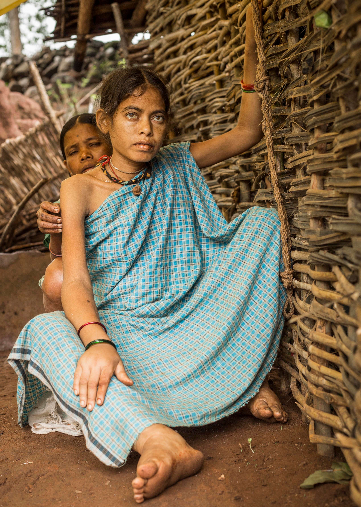
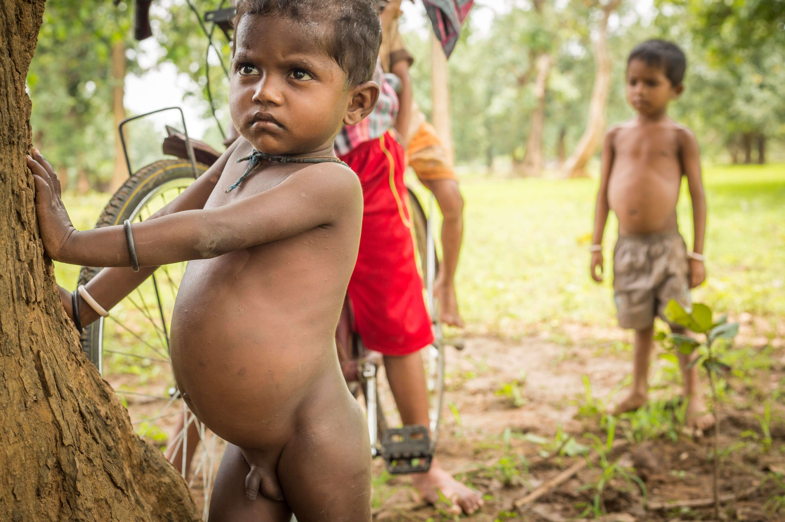
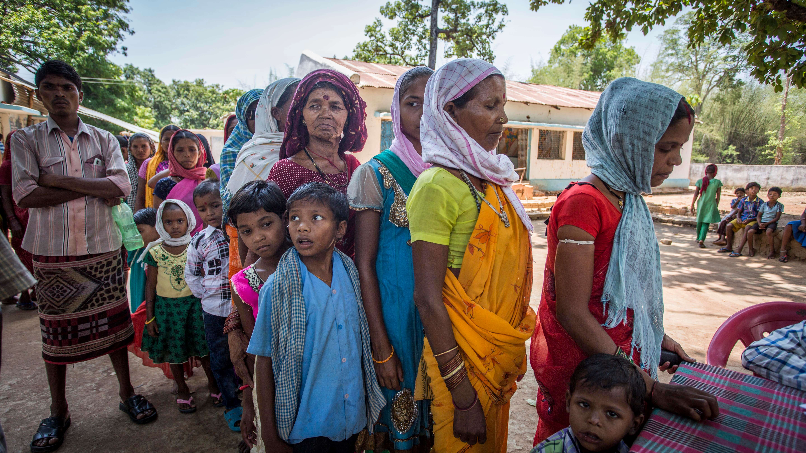
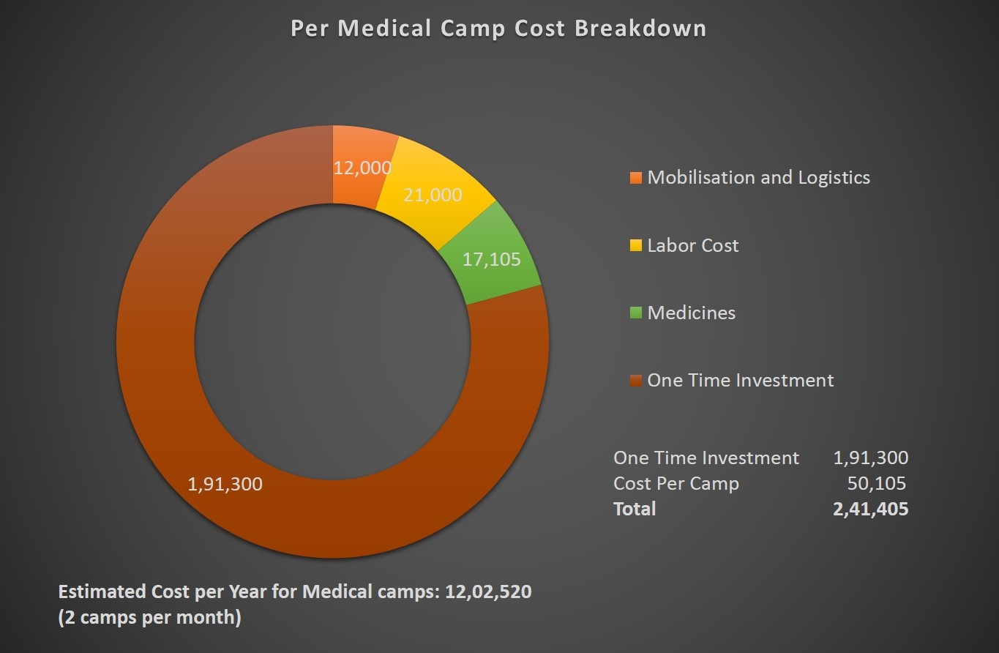

Bastar Rural Healthcare Project
Most tribal settlements in India are located in some of the most remote regions of the country. Most of the villages do not have access to basic amenities.
Inadequate healthcare infrastructure results in deaths owing to preventable diseases like Malaria, dysentery, typhoid, jaundice, and tuberculosis. Malnutrition and occurrences of sickle-cell anaemia are especially pervasive amongst the tribals of Bastar.
A young Gond woman suffering with last stages of sickle cell anemia
Lack of personal hygiene, poor sanitation, inadequate mother-child health services, absence of health education, and lack of national preventive programs result in overall poor health of tribal people in Bastar.
Nutritional deficiency leads to diseases like endemic goiter, anemia, pellagra and beriberi.
A young boy suffering with malnutrition and anemia
Maternal and infant mortality rate tends to be high due to unhygienic conditions and lackadaisical attitude of the tribals in seeking appropriate health care. Since adequate medical facilities are extremely uncommon in these regions, they are faced with the hard choice of traveling 20-30 kms to seek treatment or ensuring their families are taken care of.
In the absence of basic medical facilities, the locals rely on traditional medicine or inappropriate tribal practices to rid them of illnesses at times which make it excessively difficult for health workers to convince them to seek medical help in cases of emergencies.

A comparison between National average for Healthcare Infrastructure Vs Bastar
To address the critical healthcare gap in Bastar, Rest Of My Family’s Rural Healthcare Project has been active in the region since July 2017.
Dr. Ram Godbole and Sunita Godbole handing out prescribed medication to patient during one of our camps
Working with their limited resources had forced them to carry out their operations with inadequate medical supplies and staff. Lack of proper diagnostic devices during camps resulted in incomplete or inaccurate diagnosis of patients resulting in incomplete and inefficient treatment.
Through our collaboration we are providing financial and administrative support to ensure that we have all the necessary equipment and man power for effective execution of medical camps. We kickstarted the project with 4,78,760/- donated by Kara Foundation. With these funds we sourced required diagnostic devices, kits, infrastructure and resources in order to provide quality medical diagnostic facilities at the village level. Apart from procuring these resources we have been conducting 2 camps per month since July, 2017.
Villagers lining up at the registration desk during medical camp in Mangnar village.
The project is currently active in Dantewada district. The team comprises two visiting doctors, a laboratory technician, and 4 field assistants.
An average cost of conducting a medical camp is 50,105/-. In order to conduct 2 camps every month we need 12,02,520/- per year.
With help of your contributions we can continue to work towards improving healthcare situation in Bastar.
To provide diagnostic infrastructure and healthcare services through medical camps in remote and disconnected tribal villages of Bastar, Chattisgarh. The primary focus also includes overall improvement in health conditions, prevention of diseases, reduction in mortality rate, collection of health-related data and spreading awareness about hygiene and healthy practices among tribals.